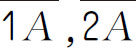
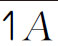

因数与倍数：整数除法里，如果被除数除以除数所得的商都是自然数而没有余数，就说被除数是除数的倍数，除数是被除数的因数．如15÷3＝5，则15是3的倍数，3是15的因数．
自然数按因数的个数来分有四种：质数、合数、1、0．
质数（或素数）：只有1和它本身两个因数，如2、3、5等．
合数：除了1和它本身还有别的因数，如15、18等．
【解题技巧】
牢记质数概念，并对任意一个数能够熟练将其分解成2个或多个因数的乘积．
【基本公式】
1．倍数特征：
| 数字 | 倍数特征 | 举例 |
| 2 | 个位上的数是0、2、4、6、8 | 20、52、46、38等 |
| 3 | 各个数位上的数字的和是3的倍数 | 150、36、45、1122等 |
| 5 | 个位上的数是0或5 | 10、15、20等 |
| 8 | 最后三位是8的倍数 | 1008等 |
| 11 | 奇数位的数字之和与偶数位的数字之和的差是0或11的倍数 | 231、1012等 |
2．1000以内的质数表（共168个）
| 范围 | 质数 |
| 0～100 | 2，3，5，7，11，13，17，19，23，29，31，37，41，43，47，53，59，61，67，71，73，79，83，89，97 |
| 101～200 | 101，103，107，109，113，127，131，137，139，149，151，157，163，167，173，179，181，191，193，197，199 |
| 201～300 | 211，223，227，229，233，239，241，251，257，263，269，271，277，281，283，293 |
| 301～400 | 307，311，313，317，331，337，347，349，353，359，367，373，379，383，389，397 |
| 401～500 | 401，409，419，421，431，433，439，443，449，457，461，463，467，479，487，491，499 |
| 501～600 | 503，509，521，523，541，547，557，563，569，571，577，587，593，599 |
| 601～700 | 601，607，613，617，619，631，641，643，647，653，659，661，673，677，683，691 |
| 701～800 | 701，709，719，727，733，739，743，751，757，761，769，773，787，797 |
| 801～900 | 809，811，821，823，827，829，839，853，857，859，863，877，881，883，887 |
| 901～1000 | 907，911，919，929，937，941，947，953，967，971，977，983，991，997 |
（第十届“走美杯”初赛）200到220之间有唯一的质数，它是_____．
【答案】 211．
【解析】 在自然数中，除了1和它本身外，没有别的因数的数为质数．
【举一反三1】
（第八届“走美杯”决赛）有一个三位数N 是质数，它的各个数字各不相同且都是质数，N 最小是_____．
（第十届“走美杯”初赛）有五个互不相等的非零自然数．如果其中一个数减少45，另外四个数都变成原先的2倍，那么得到的仍然是这五个数．这五个数的总和是_____．
【答案】 93．
【解析】 设这五个互不相等的非零自然数大小顺序为a＜b＜c＜d＜e ，根据题意可知，减少45的只能是e ，所以得b ＝2a ，c ＝2b ，d ＝2c ，e ＝2d ，e -45＝a ，所以得e ＝16a ，解得a ＝3，b ＝6，c ＝12，d ＝24，e ＝48，这五个数的和为93．
【举一反三2】
一个正整数，它的2倍的因数恰好比它自己的因数多2个，它的3倍的因数恰好比它自己的因数多3个，那么这个数是多少？
（第九届“走美杯”初赛）五个连续自然数，每个数都是合数，这五个连续自然数的和最小是_____．
【答案】 130．
【解析】 由于质数中，除了2之外，其余的质数都为奇数．又由于自然数中，奇数与偶数是相邻的，因此要找五个连续自然数都是合数的自然数，只要找到连续的奇数都是合数的自然数即可，从最小自然数找起可知，五个连续的最小的自然数为合数的最小为24、25、26、27、28，将它们相加可得：
24＋25＋26＋27＋28＝130．
【举一反三3】
（第八届“走美杯”决赛）9个连续自然数中，最大数是最小数的3倍．这9个数的和是_____．
（第九届“走美杯”决赛）一个大于0的整数的每个数字不是7就是9，但不全是7也不全是9，并且它是7和9的倍数．满足上述条件的最小正整数是______．
【答案】 77777779779．
【解析】 因为数字只包括7和9，那我们设有x 个7，y 个9，则所有数位的数字之和为7x ＋9y ，得到的值必须是9的倍数，设7x ＋9y ＝9z，推得7x ＝9（z-y ）．要使数字最小，则先考虑x 为9的情况，即该数字中至少有9个7，则该数字各数位的和至少是7×9＝63；则y 的值可以从1开始随便取，该数字一定是9的倍数．下面开始讨论．
（1）若y 为1，即数字中有9个7，1个9，且把9先看成是7＋2．设该数字为7777777777＋2×10 n ，要使该数字为7的倍数，则2×10 n 要为7的倍数，显然不可能．
（2）若y 为2，即数字中有9个7，2个9，设该数字为77777777777＋2×10 n ＋2×10 m ．要使该数字为7的倍数，则2×10 n ＋2×10 m 要为7的倍数．因为要最小，所以n 从取0开始试；当n 取1时，2×10 n ＋2×10 m ＝22不成立；当n取2时，2×10 n ＋2×10 m ＝202不成立；当n取3时，2×10 n ＋2×10 m ＝2002成立．所以该数字为77777777777＋2×100 ＋2×103 ＝77777779779．
【举一反三4】
将400分成两个三位数之和，其中一个是9的倍数，另一个是17的倍数，这两个数分别是多少？
1．因为2003是一个质数，所以2003年是一个质数年．在2003年以后的10年中还有一个质数年，这个质数年是下列选项中的（ ）年．
A．2005
B．2007
C．2009
D．2011
E．2013
2．（第六届“走美杯”决赛）自然数N 有20个正约数，N 的最小值为____．
3．（第六届“走美杯”初赛）若A ，

都是质数，则A ＝____.（
是指十位数为1，个位数字为A 的两位数）4．小明写了四个小于10的自然数，它们的积是360．已知这四个数中只有一个是合数．这四个数是______．
5．聪聪先求出自然数N 的所有因数，再将这些因数两两求和，结果发现，最小的和是3，最大的和是2010，那么这个自然数N 是____．
6．若a，b，c 是三个互不相等的大于0的自然数，且a ＋b ＋c ＝1155，则它们的最大公因数的最大值为____，最小公倍数的最小值为____，最小公倍数的最大值为____．
7．从1到30的所有数中，删去若干个数，使得在剩下的数中，没有任何一个数是另外一个数的两倍．最少要删掉____个数．
8．把7、14、20、21、28、30分成两组，使每组三个数相乘，两组数的乘积相等．
9．在100以内与77互质的所有奇数之和是多少？
10．0～6这7个数字能组成许多个没有重复数字的7位数，其中有些是55的倍数，这些数中最大的一个是几？
11．100以内因数个数最多的自然数有五个，它们分别是几？
12．爷孙两人今年的年龄的乘积是693，4年前他们的年龄都是质数．爷孙两人今年的年龄各是多少岁？